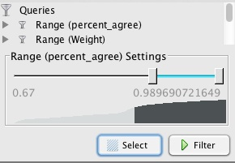
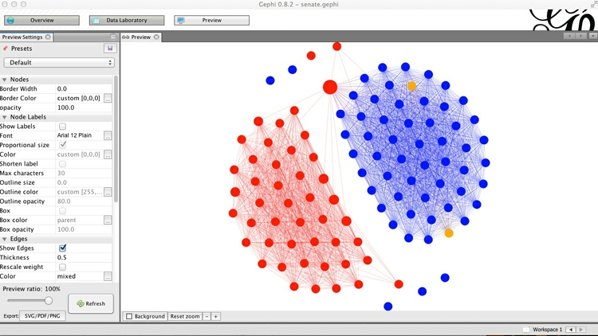
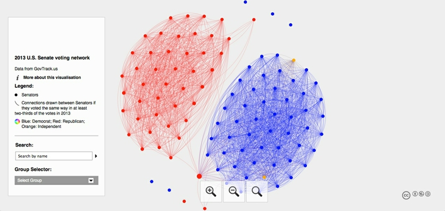

Visualizing networks
Back in week 2, we addressed the question “Which chart type should I use?” by referring this this “chart of charts”:

(Source: A. Abela, Extreme Presentation Method)
Its responses to the question “What would you like to show?” excluded two important responses: First, displaying the geographical distribution of data; and second, exploring connections between people and other entities.
We’ve spent the past three weeks working with maps, and today we will consider network graphs, which can be useful devices for understanding and visualizing all sorts of connections. The data we will use can be downloaded from here.
Today, network analysis is being used to study a wide variety of subjects, from how networks of genes and proteins influence our health to how connections between multinational companies affect the stability of the global economy:

(Source: New Scientist)
Network graphs can also be used to great effect in journalism to explore and illustrate connections that are crucial to public policy, or directly affect the lives of ordinary people.
Do any of these phrases have resonance for you?
The problem with this city is that it’s run by X’s cronies.
Contracts in this town are all about kickbacks.
Follow the money!
It’s not what you know, it’s who you know.
If so, and you can gather relevant data, network graphs can provide a means to display the connections involved in a way that your audience (and your editors) can readily understand.
Back in 2004, for instance, The Washington Post used this network graph to explore the connections among George W. Bush’s “Pioneers” — those who raised more than $100,000 for his 2000 presidential election campaign:

(Source: The Washington Post)
The network graph showed who the Pioneers were, and how they were connected to Bush, his professional and political interests, and other members of his family. The Post also found that 40% of these influential fundraisers received some sort of federal appointment after the election.
Network analysis: the basics
At its simplest level, network analysis is very straightforward. Network graphs consist of edges (the connections) and nodes (the entities that are connected).
One important consideration is whether the network is “directed,” “undirected,” or a mixture of the two. This depends upon the nature of the connections involved. If you are documenting whether people are Facebook friends, for instance, and have no information who made the original friend request, the connections have no obvious direction. But when considering following relationships on Twitter, there is a clear directionality to each relationship: A fan might follow Taylor Swift, for example, but she probably doesn’t follow them back.
The connections in undirected graphs are typically represented by simple lines or curves, while directed relationships are usually represented by arrows.
Here, for example, I used a directed network graph to illustrate patterns of citation of one another’s work by researchers working on a type of stem cell that later won their discoverer a Nobel prize. Notice that in some cases there are arrows going in both connections, because each had frequently cited the other:

(Source: New Scientist)
Nodes and edges can each have data attached to them. In the Bush fundraising network, whether or not the fundraiser was later appointed to a federal government job was a qualitiative variable used to give each individual a color. Notice also that some of the nodes in the network were not people, but organizations — another qualitative variable that was represented by the node’s shape.
If the Post had desired, it could also have scaled the size of each Pioneer by the continuous variable of how much money that fundraiser provided to Bush’s campaign.
Edges can similarly be associated with qualitative and quantitative variables. In my stem cell citation network, the edges were colored according to the qualitative variable of the location (United States, or elsewhere) of the citing and cited scientists. The thickness of each edge was drawn in proportion to the quantitative variable of the number of citations involved.
I also used that same quantitative variable to filter and simplify the network, only drawing a connection between two scientists if one had cited the other’s work at least four times.
Filtering networks based on some aspect of the data is often necessary to reveal their core structure and dynamics. This addresses what network theorists call the “hairball” problem: networks that are hard to understand because of their proliferation of connections.
How do you decide how to filter a network? There is no one-size-fits-all, right-or-wrong answer. My advice, in these circumstances, is to view network analysis as an exploratory tool: Sketch and experiment with different ways of visualizing and filtering a network, to see what stories emerge. When presenting the results to your audience, explain in simple terms how you filtered the data, so you do not mislead.
Network algorithms and metrics
The two networks we have considered so far were laid out manually, with the nodes placed individually to give the most informative display. However, network theorists have also devised layout algorithms to automate the production of network graphs. These can be very useful, especially when visualizing large and complex networks.
There are also a series of metrics that can quantify aspects of a network. Here are some examples, which measure the importance of nodes within a network in slightly different ways:
- Degree is a simple count of the number of connections for each node. For directed networks, it is divided into In-degree, for the number of incoming connections, and Out-degree, for outgoing connections. (In my stem cell citation network, In-Degree was used to set the size of each node.)
- Eigenvector centrality accounts not only for the node’s own degree, but also the degrees of the nodes to which it connects. As such, it is a measure of each node’s wider “influence” within the network. Google’s PageRank algorithm, which rates the importance of web pages according the the links they recieve, is a variant of this measure.
- Betweenness centrality essentially reveals how important each node is in providing a “bridge” between different parts of the network: It counts the number of times each node appears on the shortest path between two other nodes. It is particularly useful for highlighting the nodes that, if removed, would cause a network to fall apart.
- Closeness centrality is a measure of how close each node is, on average, to all of the other nodes in a network. It highlights the nodes that connect to the others through a lower number of edges. The Kevin Bacon Game, in which you have to connect Bacon to other movie actors through the fewest number of movies, based on co-appearances, works because he has a high closeness centrality in this network.
Network data formats
The most basic data needed to draw a network is an “edge list” — a list of pairs of nodes that connect within the network, which can be created in a spreadsheet with two columns, one for each member of each pair of nodes.
There are also a number of dedicated data formats used to record data about networks, which can store a variety of data about both edges and nodes. Here are two of the most common:
GEXF is a variant of XML, and is the native data format for Gephi, the network visualization software we will use today. Here it is shown recording information about a simple network of relationships between friends:
<?xml version="1.0" encoding="UTF-8"?>
<gexf xmlns="http://www.gexf.net/1.2draft" version="1.2" xmlns:viz="http://www.gexf.net/1.2draft/viz" xmlns:xsi="http://www.w3.org/2001/XMLSchema-instance" xsi:schemaLocation="http://www.gexf.net/1.2draft http://www.gexf.net/1.2draft/gexf.xsd">
<meta lastmodifieddate="2014-11-14">
<creator>Gephi 0.8.1</creator>
<description></description>
</meta>
<graph defaultedgetype="directed" mode="static">
<attributes class="node" mode="static">
<attribute id="gender" title="gender" type="string"></attribute>
</attributes>
<nodes>
<node id="Ann" label="Ann">
<attvalues>
<attvalue for="gender" value="F"></attvalue>
</attvalues>
<viz:size value="10.0"></viz:size>
<viz:position x="-55.12323" y="-333.22598" z="0.0"></viz:position>
<viz:color r="172" g="6" b="6"></viz:color>
</node>
<node id="Bob" label="Bob">
<attvalues>
<attvalue for="gender" value="M"></attvalue>
</attvalues>
<viz:size value="10.0"></viz:size>
<viz:position x="448.70392" y="-326.18866" z="0.0"></viz:position>
<viz:color r="6" g="172" b="172"></viz:color>
</node>
<node id="Carol" label="Carol">
<attvalues>
<attvalue for="gender" value="F"></attvalue>
</attvalues>
<viz:size value="10.0"></viz:size>
<viz:position x="-134.55676" y="-190.22183" z="0.0"></viz:position>
<viz:color r="172" g="6" b="6"></viz:color>
</node>
<node id="Dave" label="Dave">
<attvalues>
<attvalue for="gender" value="M"></attvalue>
</attvalues>
<viz:size value="10.0"></viz:size>
<viz:position x="-39.195866" y="-29.928455" z="0.0"></viz:position>
<viz:color r="6" g="172" b="172"></viz:color>
</node>
<node id="Ed" label="Ed">
<attvalues>
<attvalue for="gender" value="M"></attvalue>
</attvalues>
<viz:size value="10.0"></viz:size>
<viz:position x="-219.67612" y="101.766235" z="0.0"></viz:position>
<viz:color r="6" g="172" b="172"></viz:color>
</node>
<node id="Frank" label="Frank">
<attvalues>
<attvalue for="gender" value="M"></attvalue>
</attvalues>
<viz:size value="10.0"></viz:size>
<viz:position x="256.86908" y="-58.65515" z="0.0"></viz:position>
<viz:color r="6" g="172" b="172"></viz:color>
</node>
<node id="Gary" label="Gary">
<attvalues>
<attvalue for="gender" value="M"></attvalue>
</attvalues>
<viz:size value="10.0"></viz:size>
<viz:position x="91.872314" y="-152.9108" z="0.0"></viz:position>
<viz:color r="6" g="172" b="172"></viz:color>
</node>
<node id="Helen" label="Helen">
<attvalues>
<attvalue for="gender" value="F"></attvalue>
</attvalues>
<viz:size value="10.0"></viz:size>
<viz:position x="382.8126" y="-166.48383" z="0.0"></viz:position>
<viz:color r="172" g="6" b="6"></viz:color>
</node>
</nodes>
<edges>
<edge source="Ann" target="Bob">
<attvalues></attvalues>
</edge>
<edge source="Ann" target="Carol">
<attvalues></attvalues>
</edge>
<edge source="Bob" target="Ann">
<attvalues></attvalues>
</edge>
<edge source="Bob" target="Carol">
<attvalues></attvalues>
</edge>
<edge source="Carol" target="Dave">
<attvalues></attvalues>
</edge>
<edge source="Carol" target="Ed">
<attvalues></attvalues>
</edge>
<edge source="Ed" target="Frank">
<attvalues></attvalues>
</edge>
<edge source="Gary" target="Helen">
<attvalues></attvalues>
</edge>
</edges>
</graph>
</gexf>
GraphML is another, older XML format used for storing and exchanging network graph data, shown here encoding the same data as above:
<?xml version="1.0" encoding="UTF-8"?>
<graphml xmlns="http://graphml.graphdrawing.org/xmlns">
<key attr.name="label" attr.type="string" for="node" id="label"/>
<key attr.name="Edge Label" attr.type="string" for="edge" id="edgelabel"/>
<key attr.name="weight" attr.type="double" for="edge" id="weight"/>
<key attr.name="Edge Id" attr.type="string" for="edge" id="edgeid"/>
<key attr.name="r" attr.type="int" for="node" id="r"/>
<key attr.name="g" attr.type="int" for="node" id="g"/>
<key attr.name="b" attr.type="int" for="node" id="b"/>
<key attr.name="x" attr.type="float" for="node" id="x"/>
<key attr.name="y" attr.type="float" for="node" id="y"/>
<key attr.name="size" attr.type="float" for="node" id="size"/>
<key attr.name="gender" attr.type="string" for="node" id="gender"/>
<graph edgedefault="directed">
<node id="Ann">
<data key="label">Ann</data>
<data key="gender">F</data>
<data key="size">10.0</data>
<data key="r">172</data>
<data key="g">6</data>
<data key="b">6</data>
<data key="x">-55.12323</data>
<data key="y">-333.22598</data>
</node>
<node id="Bob">
<data key="label">Bob</data>
<data key="gender">M</data>
<data key="size">10.0</data>
<data key="r">6</data>
<data key="g">172</data>
<data key="b">172</data>
<data key="x">448.70392</data>
<data key="y">-326.18866</data>
</node>
<node id="Carol">
<data key="label">Carol</data>
<data key="gender">F</data>
<data key="size">10.0</data>
<data key="r">172</data>
<data key="g">6</data>
<data key="b">6</data>
<data key="x">-134.55676</data>
<data key="y">-190.22183</data>
</node>
<node id="Dave">
<data key="label">Dave</data>
<data key="gender">M</data>
<data key="size">10.0</data>
<data key="r">6</data>
<data key="g">172</data>
<data key="b">172</data>
<data key="x">-39.195866</data>
<data key="y">-29.928455</data>
</node>
<node id="Ed">
<data key="label">Ed</data>
<data key="gender">M</data>
<data key="size">10.0</data>
<data key="r">6</data>
<data key="g">172</data>
<data key="b">172</data>
<data key="x">-219.67612</data>
<data key="y">101.766235</data>
</node>
<node id="Frank">
<data key="label">Frank</data>
<data key="gender">M</data>
<data key="size">10.0</data>
<data key="r">6</data>
<data key="g">172</data>
<data key="b">172</data>
<data key="x">256.86908</data>
<data key="y">-58.65515</data>
</node>
<node id="Gary">
<data key="label">Gary</data>
<data key="gender">M</data>
<data key="size">10.0</data>
<data key="r">6</data>
<data key="g">172</data>
<data key="b">172</data>
<data key="x">91.872314</data>
<data key="y">-152.9108</data>
</node>
<node id="Helen">
<data key="label">Helen</data>
<data key="gender">F</data>
<data key="size">10.0</data>
<data key="r">172</data>
<data key="g">6</data>
<data key="b">6</data>
<data key="x">382.8126</data>
<data key="y">-166.48383</data>
</node>
<edge source="Ann" target="Bob">
<data key="weight">1.0</data>
</edge>
<edge source="Ann" target="Carol">
<data key="weight">1.0</data>
</edge>
<edge source="Bob" target="Ann">
<data key="weight">1.0</data>
</edge>
<edge source="Bob" target="Carol">
<data key="weight">1.0</data>
</edge>
<edge source="Carol" target="Dave">
<data key="weight">1.0</data>
</edge>
<edge source="Carol" target="Ed">
<data key="weight">1.0</data>
</edge>
<edge source="Ed" target="Frank">
<data key="weight">1.0</data>
</edge>
<edge source="Gary" target="Helen">
<data key="weight">1.0</data>
</edge>
</graph>
</graphml>
For visualizing networks online, it often makes sense to save them as JSON, which keeps file size small and works well with JavaScript visualization libraries. This is how that same network data looks stored as JSON:
{
"edges":
[{"source":"Gary","target":"Helen","id":"8","attributes":{"Weight":"1.0"},"color":"rgb(89,89,89)","size":1.0},
{"source":"Carol","target":"Ed","id":"6","attributes":{"Weight":"1.0"},"color":"rgb(89,89,89)","size":1.0},
{"source":"Bob","target":"Ann","id":"2","attributes":{"Weight":"1.0"},"color":"rgb(89,89,89)","size":1.0},
{"source":"Ann","target":"Carol","id":"5","attributes":{"Weight":"1.0"},"color":"rgb(172,6,6)","size":1.0},
{"source":"Carol","target":"Dave","id":"4","attributes":{"Weight":"1.0"},"color":"rgb(89,89,89)","size":1.0},
{"source":"Ann","target":"Bob","id":"1","attributes":{"Weight":"1.0"},"color":"rgb(89,89,89)","size":1.0},
{"source":"Ed","target":"Frank","id":"7","attributes":{"Weight":"1.0"},"color":"rgb(6,172,172)","size":1.0},
{"source":"Bob","target":"Carol","id":"3","attributes":{"Weight":"1.0"},"color":"rgb(89,89,89)","size":1.0}],
"nodes":
[{"label":"Ann","x":-55.12322998046875,"y":-333.2259826660156,"id":"Ann","attributes":{"gender":"F"},"color":"rgb(172,6,6)","size":10.0},
{"label":"Bob","x":448.70391845703125,"y":-326.18865966796875,"id":"Bob","attributes":{"gender":"M"},"color":"rgb(6,172,172)","size":10.0},
{"label":"Gary","x":91.872314453125,"y":-152.91079711914062,"id":"Gary","attributes":{"gender":"M"},"color":"rgb(6,172,172)","size":10.0},
{"label":"Carol","x":-134.5567626953125,"y":-190.22183227539062,"id":"Carol","attributes":{"gender":"F"},"color":"rgb(172,6,6)","size":10.0},
{"label":"Frank","x":256.86907958984375,"y":-58.6551513671875,"id":"Frank","attributes":{"gender":"M"},"color":"rgb(6,172,172)","size":10.0},
{"label":"Helen","x":382.8125915527344,"y":-166.48382568359375,"id":"Helen","attributes":{"gender":"F"},"color":"rgb(172,6,6)","size":10.0},
{"label":"Ed","x":-219.67611694335938,"y":101.7662353515625,"id":"Ed","attributes":{"gender":"M"},"color":"rgb(6,172,172)","size":10.0},
{"label":"Dave","x":-39.195865631103516,"y":-29.928455352783203,"id":"Dave","attributes":{"gender":"M"},"color":"rgb(6,172,172)","size":10.0}]
}
Introducing Gephi
Gephi is a tool designed to draw, analyze, filter and customize the appearance of network graphs according to qualitative and quantitative variables in the data.
Gephi allows you to deploy layout algorithms, or to place nodes manually. It can calculate network metrics, and lets you use the results of these analyses to customize the appearance of your network graph.
Finally, Gephi allows you to create publication-quality vector graphics of your network visualizations, and to export your filtered and analyzed networks in data formats that can be displayed interactively online, using JavaScript visualization libraries.
Launch Gephi, and you will see a screen like this:

(You may also see an initial welcome window, allowing you to load recently used or sample data. You can close this.)
Install Gephi plugins
Like the other open source data visualization and analysis tools we have used in previous weeks, Gephi has a series of plugins that extend its functionality — you can browse the available options here.
First we will install two plugins that we will later use to export data from Gephi. Select Tools>Plugins from the top menu, and the Plugins window should open:

In the Available Plugins tab, look for the JSONExporter and SigmaExporter plugins — you can use the Search box to find them, if necessary. Then click Install.
After installing plugins, you may be prompted to restart Gephi, which you should do.
If you do not find the plugin you are looking for, close Gephi and browse for the plugin at the Gephi marketplace, where you can download manually. Then relaunch Gephi, select Tools>Plugins from the top menu and go to the Downloaded tab. Click the Add Plugins ... button, and navigate to where the plugin was saved on your computer — it should be in a zipped folder or have an .nbm file extension. Then click Install and follow the instructions that appear.
See here for more instructions on installing Gephi plugins.
Make a simple network graph illustrating connections between friends
Having launched Gephi, click on Data Laboratory. This is where you can view and edit raw network data. From the top menu, select File>New Project, and the screen should look like this:

Notice that you can switch between viewing Nodes and Edges, and that there are buttons to Add node and Add edge, which allow you to construct simple networks by manual data entry. Instead, we will import a simple edge list, to show how Gephi will add the nodes and draw the network from this basic data.
To do this, click the Import Spreadsheet button — which actually imports CSV files, rather than spreadsheets in .xls or .xlsx format. Your CSV file should at a minimum have two columns, headed Source and Target. By default, Gephi will create a directed network from an edge list, with arrows pointing from from Source to Target nodes. If some or all of your connections are undirected, include a third column called Type and fill the rows with Undirected or Directed, as appropriate.
At the dialog box shown below, navigate to the file friends.csv, and ensure that the data is going to be imported as an Edges table:

Click Next> and then Finish, and notice that Gephi has automatically created a Nodes table from the information in the Edges table:

In the Nodes table, click the Copy data to other column button at the bottom of the screen, select Id and click OK to copy to Label. This column can later be used to put labels on the network graph.
Now click Add column, call it Gender and keep its Type as String, because we are going to enter text values, rather than numbers. This column can later be used to color the friends according to their gender.
Having created the column, double-click on each row and enter F or M, as appropriate:

Now switch to the Edges table, and notice that each edge has been classed as Directed:

This would make sense if, for example, we were looking at dinner invitations made by the source nodes. Notice that in this network, not only has Ann invited Bob to dinner, but Bob has also invited Ann. For each of the other pairs, the invitations have not been reciprocated.
Now click Overview to go back to the main graph view, where a network graph should now be visible. You can use your mouse/trackpad to pan and zoom. On my trackpad, right-click and hold enables panning, while the double-finger swipe I would normally use to scroll enables zoom. Your settings may vary!
Note also that the left of the two sliders at bottom controls the size of the edges, and that individual nodes can be clicked and moved to position them manually. Below I have arranged the nodes so that none of the edges cross over one another. The Context panel at top right gives basic information about the network:

Click on the dark T button at bottom to call up labels for the nodes, and use the right of the two sliders to control their size. The light T button would call up edge labels, if they were set.
Turn off the labels once more, and we will next color the nodes according to the friends’ gender.
Notice that the panel at top left contains two tabs, Partition and Ranking. The former is used to style nodes or edges according to qualitative variables, the latter styling by quantitative variables. Select Partition>Nodes, hit the Refresh button with the circling green arrows, select Gender and hit the Run button with the green “play” symbol. The nodes should now be colored by gender, and you may find that the edges also take the color of the source node:

To turn off this behavior, click this button at the bottom of the screen:  (the button to its immediate left allows edge visibility to be turned on and off).
(the button to its immediate left allows edge visibility to be turned on and off).
Select File>New Project and you will be given the option to save your project before closing. You can also save your work at any time by selecting File>Save or by using the usual ⌘-S shortcut.
Visualize patterns of voting in the U.S. Senate
Having learned these basics, we will now explore a more interesting network, based on voting patterns in the U.S. Senate in 2013. The data is in the file senate-113-2013.gexf, and was scraped from GovTrack.us using a Python script. (This is included in the data package for the class, for those of you who may be interested to look at the data for other years.)
Select File>Open from the top menu and navigate to the data file. The next dialog box will give you some information about the network being imported, in this case telling you it it is an undirected network containing 104 nodes (two Senators left the chamber in 2013, their places filled first by temporary appointees, then elected replacements), and 5335 edges:

Once the network has imported, go to the Data Laboratory to view and examine the data for the Nodes and Edges. Notice that each edge has a column called percent_agree, which is the number of times the member of each pair of Senators voted the same way, divided by the total number of votes in the chamber in 2013, giving a number between 0 and 1:

Click the Configuration button, and ensure that Visible graph only is checked. When we start filtering the data, this will ensure that the data tables show the filtered network, not the original.
Now return to the Overview, where we will use a layout algorithm to alter the appearance of the network. In the Layout panel at bottom left, choose the Fruchterman Reingold layout algorithm and click Run. (I know from prior experimentation that this algorithm gives a reasonable appearance for this network, but do experiment with different options if working on your own network graphs in future.) Note also that there are options to change the parameters of the algorithm, such as the “Gravity” with which connected nodes attract one another. We will simply accept the default options, but again you may want to experiment with different values for your own projects.
When the network settles down, click Stop to stabilize it. The network should look something like this:

This looks a little neater than the initial view, but is still a hairball that tells us little about the underlying dynamics of voting in the Senate. This is because almost all Senators voted the same way at least once, so each one is connected to almost all of the others.
So now we need to filter the network, so that edges are not drawn if Senators voted the same way less often. Select the Filters tab in the main panel at right, and select Attributes>Range, which gives the option to filter on percent_agree. Double-click on percent_agree, to see the following under Queries:

The range can be altered using the sliders, but we will instead double-click on the value for the bottom of the range, and manually edit it to 0.67:

This will draw edges between Senators only if they voted the same way in at least two-thirds of the votes in 2013. Hit Filter, and watch many of the edges disappear. Switch to the Data Laboratory view, and see how the Edges table has also changed. Now return to the Overview, Run the layout algorithm again, and the graph should change to look something like this:

Now the network is organized into two clusters, which are linked through only a single Senator. These are presumably Democrats and Republicans, which we can confirm by coloring the nodes by party in the Partition tab at top left:

To customize the colors, click on each square in the Partition tab, then Shift-Ctrl and click to call up the color selector:

Make Democrats blue (Hex: 0000FF), Republicans red (Hex: FF0000) and the two Independents orange (Hex: FFAA00).
Now is a good time to save the project, if you have not done so already.
Next we will calculate some metrics for our new, filtered network. If we are interested in highlighting the Senators who are most bipartisan, then Betweenness centrality is a good measure — remember that it highlights “bridging” nodes that prevent the network from breaking apart into isolated clusters.
Select the Statistics tab in the main right-hand panel, and then Edge Overview>Avg. Path Length>Run. Click OK at the next dialog box, close the Graph Distance Report, and go to the Data Laboratory view. Notice that new columns, including Betweenness Centrality, have appeared in the Edges table:

Switch back to the Overview, and select the Ranking tab on the top left panel. Choose Betweenness Centrality as the ranking parameter for Nodes, select the gem-like icon ( ), which controls the size of nodes, and select a minimum and maximum size for the range.
), which controls the size of nodes, and select a minimum and maximum size for the range.

(Although usually I urge you to scale circles precisely by area, here this is not a concern because the goal is simply to highlight more bipartisan Senators, not to provide an accurate representation of a measure that will be unfamiliar to the average person.)
Click Apply, and the network should look something like this:

You may at this point want to switch on the labels, and note that Susan Collins, the Republican from Maine, was the standout bipartisan Senator in 2013.
Now switch to Preview, which is where the appearance of the network graph can be polished before exporting it as a vector graphic. Click Refresh to see the network graphic drawn with default options:

You can then customize using the panel at left, clicking Refresh to review each change. Here I have removed the nodes’ borders, by setting their width to zero, changed the edges from the default curved to straight, and reduced edge thickness to 0.5:

Export the finished network as vector graphics and for online visualization
Export the network graph in SVG or PDF format using the button at bottom left, or by selecting File>Export>SVG/PDF/PNG file... from the top menu.
Now select File>Export>Graph file... and save as JSON (this option is available through the JSONExporter plugin we installed earlier). Make sure to select Graph>Visible only at the dialog box, so that only the filtered network is exported:

Finally, select File>Export>Sigma.js template..., which uses the SigmaExporter plugin to create an interactive online version of the network. Make sure to select Hover behavior>dim at the dialog box, which will allow the connections of each node to be highlighted when each is hovered over. You can also add a title, description, and information for a legend:

Introducing Sigma.js
Network graphs can be visualized using several JavaScript libraries including D3 (see here for an example). However, we will use the Sigma.js JavaScript library, which is specifically designed for the purpose, and can more easily handle large and complex networks.
View and edit the interactive created by the SigmaExporter plugin
You have already made a Sigma.js visualization of the Senate voting network using the SigmaExporter plugin. Navigate to where you saved the export, where you should find a folder called network. Open that folder, and then open the file index.html in Firefox (note that Chrome will only display the visualization if it is on a web server). This is what you should see:

Notice that when you hover over each node, its label appears, and its direct connections remain highlighted, while the rest of the network is grayed out — this is the behavior created by SigmaExporter’s Hover behavior>dim option.
Click on a node, and an information panel will appear at right, detailing that node’s connections:

Scott Hale of the Oxford Internet Institute, who wrote the SigmaExporter plugin, is happy for it to be used by journalists. However, the panel that appears when each node is clicked is created using fancyBox, which has separate licensing requirements. It can be used free for personal or non-profit projects, but requires a modest license fee to be paid for use on commercial sites — which would include for-profit media outlets.
You can customize the appearance of the network by editing the file config.json:
{
"type": "network",
"version": "1.0",
"data": "data.json",
"logo": {
"text": "",
"file": "",
"link": ""
},
"text": {
"title": "2013 U.S. Senate voting network",
"more": "",
"intro": "Data from GovTrack.us"
},
"legend": {
"edgeLabel": "Connections drawn between Senators if they voted the same way in at least two-thirds of the votes in 2013",
"colorLabel": "Blue: Democrat; Red: Republican; Orange: Independent",
"nodeLabel": "Senators"
},
"features": {
"search": true,
"groupSelectorAttribute": "party",
"hoverBehavior": "dim"
},
"informationPanel": {
"imageAttribute": false,
"groupByEdgeDirection": false
},
"sigma": {
"graphProperties": {
"minEdgeSize": 0.2,
"maxNodeSize": 7,
"maxEdgeSize": 0.5,
"minNodeSize": 1
},
"drawingProperties": {
"labelThreshold": 10,
"hoverFontStyle": "bold",
"defaultEdgeType": "curve",
"defaultLabelColor": "#000",
"defaultLabelHoverColor": "#fff",
"defaultLabelSize": 14,
"activeFontStyle": "bold",
"fontStyle": "bold",
"defaultHoverLabelBGColor": "#002147",
"defaultLabelBGColor": "#ddd"
},
"mouseProperties": {
"minRatio": 0.75,
"maxRatio": 20
}
}
}
Note the options under graphProperties and drawingProperties, which can be altered to change the size of nodes and edges, switch from the default curve to straight edges, and so on. See here for more on how to customize the network graph using these settings.
Make your own Sigma.js interactive network
You may, however, wish to make your own network interactives. To facilitate this, I have provided a basic Sigma.js template, prepared with the generous help of Alexis Jacomy, the author of Sigma.js. This is in the senate folder.
Save the JSON file you exported from Gephi in the data subfolder with the name senate.json, then open the file index.html in Firefox (again, it will not work in Chrome unless the page is on a web server). You should see a screen like this, which you will notice has similar hovering behavior as the SigmaExporter interactive:

Open index.html in TextWrangler or your preferred text editor, and you will see this code:
<!DOCTYPE html>
<html>
<head>
<meta charset=utf-8 />
<title>U.S. Senate network</title>
<meta name="viewport" content="width=device-width, initial-scale=1.0, maximum-scale=1.0, user-scalable=no" />
<script src="src/sigma.min.js"></script>
<script src="src/sigma.parsers.json.min.js"></script>
<style>
body {margin:0; padding:0;}
#sigma-container {position:absolute; top:0; bottom:0; width:100%;}
</style>
</head>
<body>
<div id="sigma-container"></div>
<script>
function init() {
// Finds the connections of each node
sigma.classes.graph.addMethod("neighbors", function(nodeId) {
var k,
neighbors = {},
index = this.allNeighborsIndex[nodeId] || {};
for (k in index)
neighbors[k] = this.nodesIndex[k];
return neighbors;
});
// Creates an instance of Sigma.js
var sigInst = new sigma({
renderers: [
{
container: document.getElementById("sigma-container"),
type: "canvas"
}
]
});
// Customizes its settings
sigInst.settings({
// Drawing properties :
defaultLabelColor: "#000",
defaultLabelSize: 14,
defaultLabelHoverColor: "#fff",
labelThreshold: 11,
defaultHoverLabelBGColor: "#888",
defaultLabelBGColor: "#ddd",
defaultEdgeType: "straight",
// Graph properties :
minNodeSize: 3,
maxNodeSize: 10,
minEdgeSize: 0.1,
maxEdgeSize: 0.2,
// Mouse properties :
zoomMax: 20
});
// Parses JSON file to fill the graph
sigma.parsers.json(
"data/senate.json",
sigInst,
function() {
// Little hack here:
// In the latest Sigma.js version have to delete edges" colors manually
sigInst.graph.edges().forEach(function(e) {
e.color = null;
});
// Also, to facilitate the update of node colors, store
// their original color under the key originalColor:
sigInst.graph.nodes().forEach(function(n) {
n.originalColor = n.color;
});
sigInst.refresh();
}
);
// When a node is clicked, check for each node to see if it is connected. If not, set its color as gray
// Do the same for the edges
var grayColor = "#ccc";
sigInst.bind("overNode", function(e) {
var nodeId = e.data.node.id,
toKeep = sigInst.graph.neighbors(nodeId);
toKeep[nodeId] = e.data.node;
sigInst.graph.nodes().forEach(function(n) {
if (toKeep[n.id])
n.color = n.originalColor;
else
n.color = grayColor;
});
sigInst.graph.edges().forEach(function(e) {
if (e.source === nodeId || e.target === nodeId)
e.color = null;
else
e.color = grayColor;
});
// Since the data has been modified, call the refresh method to make the colors update
sigInst.refresh();
});
// When a node is no longer being hovered over, return to original colors
sigInst.bind("outNode", function(e) {
sigInst.graph.nodes().forEach(function(n) {
n.color = n.originalColor;
});
sigInst.graph.edges().forEach(function(e) {
e.color = null;
});
sigInst.refresh();
});
}
if (document.addEventListener)
document.addEventListener("DOMContentLoaded", init, false);
else
window.onload = init;
</script>
</body>
</html>
The code has been documented to explain what each part does. Notice that the head of the web page loads the main Sigma.js script, and a second script that reads, or “parses,” the json data. These are in the src subfolder, where I have also included a script to parse files in GEXF format. In that case, you would load this script in the page head, and substitute sigma.parsers.gexf for sigma.parsers.json in the code in the body of the page.
Notice also that sigInst.settings includes options for customizing the network graph, as for the SigmaExporter version above.
To explore Sigma.js further, clone its Github repository and examine the code for the examples given.
Further reading/resources
Assignment
- Send me your finished Sigma.js network, i.e. zip the
senatefolder and email that to me. - Continue working on your final project, sending me a progress report.